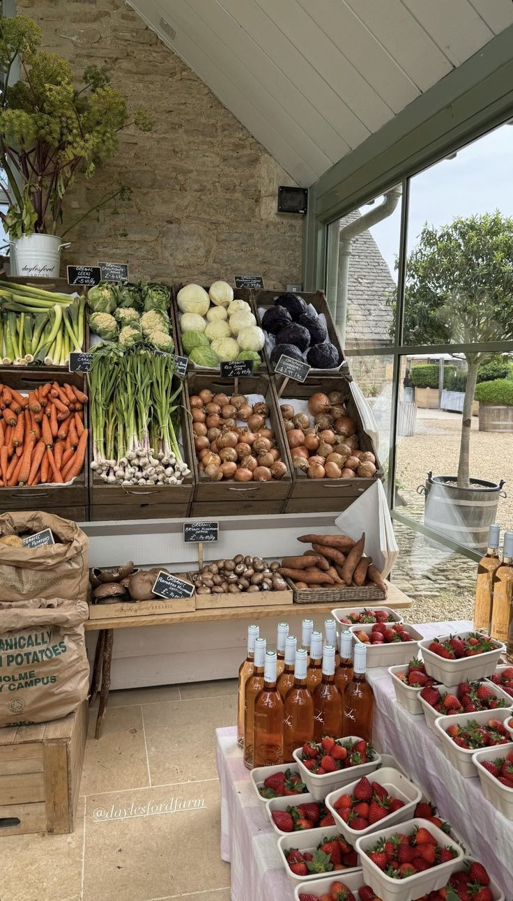

Reliable farm produce sourcing for modern supply chains.
Online Farm Produce connects verified farmers with buyers through transparent pricing, dependable fulfillment, and real-time order visibility.

Built for farmers and buyers
Farmers manage inventory, buyers place orders, and both track delivery progress.
Farmers
List products, manage inventory, and keep buyers updated on fulfillment status.
Farmer DashboardA reliable fulfillment pipeline
1. Discover
Filter by name, category, price range, and location to source the right produce.
2. Order
Place orders in KES and keep all items in one cart.
3. Track
Follow order status from request to completion.